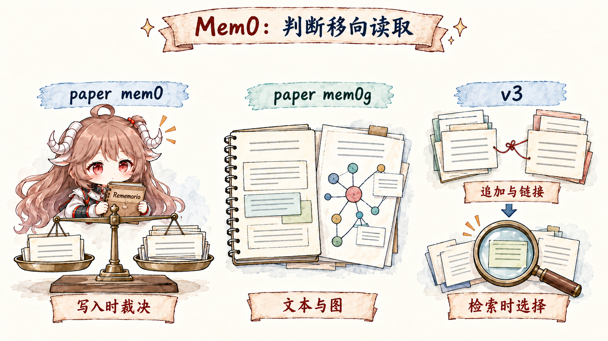
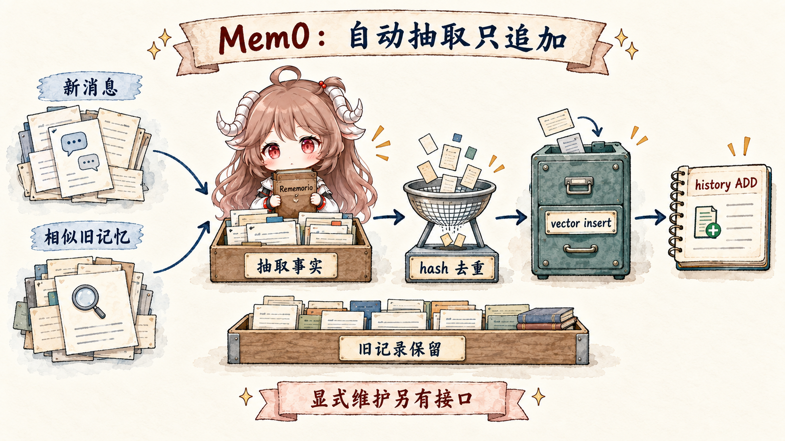
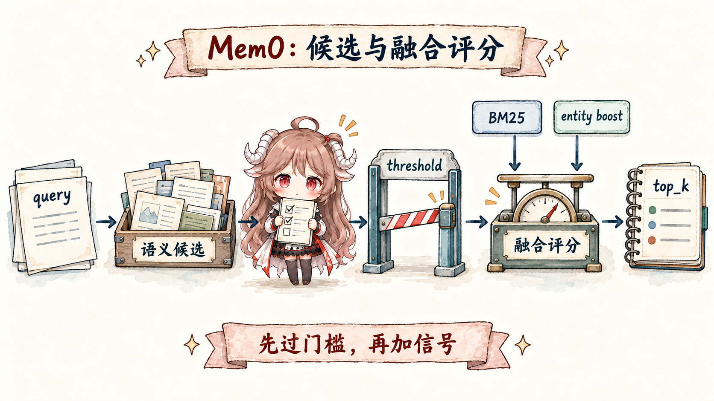
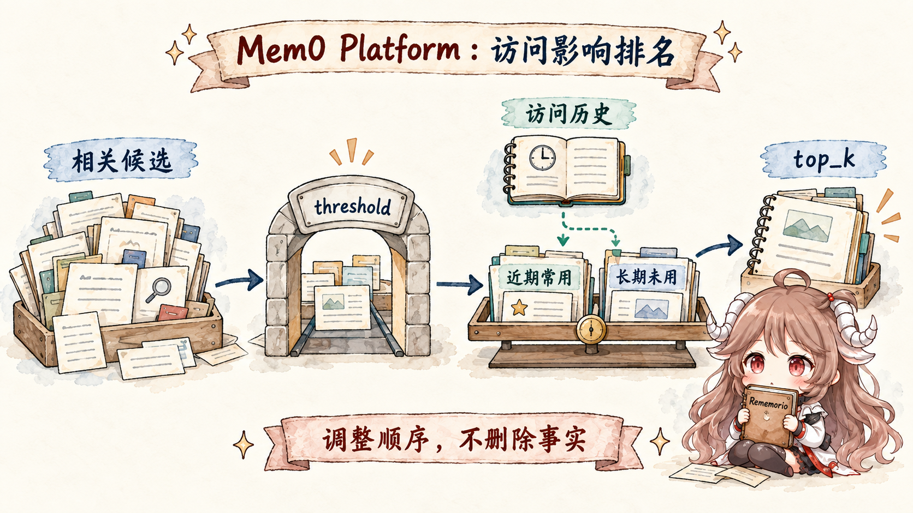

先设一个具体场景。一个订餐厅的 agent 和同一个用户聊了半年：一月，用户说自己住在北京，通常约朋友吃素食； 三月，用户说最近开始吃海鲜；四月，用户搬到巴黎；六月，用户问“这个周末帮我找个餐厅，别忘了我现在的情况”； 七月，用户又问“以前我和朋友吃饭一般会选什么地方？” 这时 agent 不能只会背聊天记录，它要知道哪些事实是现在的偏好， 哪些事实已经变成历史，哪些变化本身也值得保留。
最直接的做法有三种。第一，把半年聊天全塞进 prompt：短期能用，长期成本高，还容易让旧事实干扰当前回答。 第二，维护一份“用户档案”，每次新事实来了就覆盖旧值：当前状态很干净，但用户问历史时就没有证据。 第三，把每条事实都写进向量库，搜索时拿 top-k：实现简单，却会遇到重复事实、冲突事实、关系漏召回和时间解释的问题。 Mem0 受关注，正是因为它把这三种直接做法继续往前拆：记忆成为一层独立系统， 先从对话里抽出可检索事实，再在回答前挑一小部分相关记忆放回模型上下文。
在工程形态上，Mem0 位于应用和模型之间：应用把对话、用户维度和 agent 维度交给它， 它把可长期使用的信息抽成 memory records；模型需要回答时，应用再从 Mem0 搜出少量相关记忆放回上下文。 这个位置解释了它为什么容易成为 agent 记忆讨论里的核心组件：它不要求把所有历史塞进 prompt，也不要求每个应用自己重写一套记忆抽取、去重和检索逻辑。 Mem0 官方博客从几个角度反复强调同一件事： context window 更像 RAM，不是长期存储； 更大的上下文窗口也不能替代持久记忆； 把记忆写成一个文件又会把证据、偏好、临时状态和检索策略糊在一起。 这些文章共同指向一个工程判断：memory layer 的价值在于把“多记一些”拆成保存、检索、时间解释和排名策略几层责任。 v3、Temporal Reasoning 和 Memory Decay 就是在这条线上继续展开。
阅读契约。 读完这一篇，应该能沿着同一个餐厅场景复述四件事：paper mem0 怎样用相似旧记忆和 LLM 判断 ADD / UPDATE / DELETE / NOOP； mem0g 为什么把实体关系放进图；v3 为什么把写入改薄、把判断推到读取；Temporal Reasoning 和 Memory Decay 分别解决“站在哪一天回答”和“最近常用信息怎么排序”的问题。
证据边界。 本文把事实分成四层：Mem0 原始论文说明 paper mem0 与 mem0g 的算法设计； Mem0 官方博客和文档说明 Platform v3 的公开合约； mem0ai/mem0 公开源码说明 OSS 与 Python SDK 可见的调用路径； Platform 服务端内部实现不可见，因此 Temporal Reasoning 和 Memory Decay 的排序细节只按官方合约描述，不写成源码事实。
下面会一直沿着这个餐厅场景读 Mem0 的几代设计。先看 paper mem0 如何在写入时判断 ADD、UPDATE、DELETE、NOOP； 再看 mem0g 为什么把实体和关系放进图；然后看 v3 为什么改成 ADD-only、实体索引和 hybrid retrieval。 最后再接上 Temporal Reasoning 与 Memory Decay：一个处理“站在哪一天看历史”，一个处理“最近反复用到的记忆该不该更靠前”。
一、同一个问题，三种记忆路线
讲 Mem0 演进时，最容易混在一起的是两条命名线：论文里讨论的是 mem0 和 mem0g， 产品与 SDK 迁移材料里讨论的是 v2 API 和 v3 行为。本文会避开把它们硬套成“官方 v1、v2、v3”的读法， 改按算法取舍来读：如果用户偏好和居住地会变化，系统到底在什么时候合并旧事实、什么时候显式保存关系、什么时候只追加新证据。 这条线读顺以后，ADD-only、Temporal 和 Decay 就会显出同一个问题下的分层答案，而不只是一堆功能名。
| 称呼 | 更准确的读法 | 不要误读成 |
|---|---|---|
| paper mem0 | 论文里的基础算法：抽取新 memory，再对相似旧 memory 判定 ADD/UPDATE/DELETE/NOOP。 | 官方产品里的“v1”。公开材料没有这样命名。 |
| paper mem0g | 论文里的图增强算法：显式抽 entity 和 relationship，并使用图数据库。 | 官方产品里的“v2”。它更像 mem0 旁边的一条 graph 变体。 |
| v2 API / SDK | 迁移材料里说的旧版本面：add 可能返回 ADD/UPDATE/DELETE，且有 enable_graph、graph_store 等图记忆配置。 |
单指 mem0g。v2 是产品/API/SDK 行为集合，不是论文算法名。 |
| mem0 v3 | 2026 年 4 月后的新算法面：single-pass ADD-only、内置 entity linking、hybrid retrieval、Temporal Reasoning 和 Memory Decay。 | 只是把 mem0g 改名。v3 同时改了写入、图关系承担方式和检索排序。 |

1.1 paper mem0：在写入时整理旧记忆
先只看一件事：用户三月说“我最近也开始吃海鲜了”。系统里已经有一条旧记忆“用户通常约朋友吃素食餐厅”。 这条新事实到底应该怎么进 memory store？如果直接新增，未来可能同时召回“素食”和“海鲜”，模型不知道哪个更适合当前回答； 如果直接覆盖，又会把一月的历史抹掉。paper mem0 的想法是：写入时先整理一次旧记忆，让 memory set 尽量紧凑。
| 写入前 | 新对话 | paper mem0 要回答的问题 |
|---|---|---|
| 用户通常约朋友吃素食餐厅。 | 最近开始吃海鲜。 | 这是新偏好、偏好扩展，还是旧偏好被替换？ |
| 用户住在北京。 | 四月搬到巴黎。 | 旧居住地要更新，还是保留成历史？ |
| 用户喜欢安静的小餐馆。 | 不喜欢吵闹的餐吧。 | 这是同一偏好的补充，还是另一条独立记忆？ |
原始论文里的基础算法大致分两步。
第一步，LLM 从最新对话和近期上下文里抽出 candidate memory；第二步，对每条 candidate，先从已有 memory 里找出相似旧记录，
再让 LLM 比较新旧事实，输出 ADD、UPDATE、DELETE 或 NOOP。
这里的“相似”承担召回职责：先把可能有关的旧记忆拿到 LLM 面前，再交给后面的裁决。论文把这一步写成取 top-s
条 semantically similar memories，实验里 s 设为 10；也就是说，每条 candidate 只会携带少量相似旧记忆进入 prompt，
memory store 不会整体进 prompt。
paper mem0 写入路径，可以这样读：
new conversation
-> LLM extracts candidate memories
-> embed each candidate
-> vector search retrieves top-s similar existing memories
(paper experiments use s = 10)
-> LLM compares candidate with those retrieved old memories
-> ADD / UPDATE / DELETE / NOOP changes the memory store
“怎么判断相似”也要分清职责。向量检索负责召回：candidate 变成 embedding，再用 vector similarity 找旧 memory。
召回结果只是候选集合，分数高不等于一定更新；top-s 只是一个上下文预算阀门，
用来避免把全部旧记忆塞进提示词。真正判断重复、补充、冲突还是删除的是后面的 LLM。
可见 OSS 里的
DEFAULT_UPDATE_MEMORY_PROMPT
也按这个思路组织：比较新事实和已有 memory，然后在四种操作里选一个。源码提示词里的 NONE
对应这里说的 NOOP。
DEFAULT_UPDATE_MEMORY_PROMPT 的核心职责（简化）：
new fact + similar existing memories
-> ADD 新事实不在旧 memory 里
-> UPDATE 同一对象的信息变了，或新事实更完整
-> DELETE 新事实否定旧 memory，或用户要求移除
-> NONE 已经存在，或者不值得写入| 新事实和旧 memory 的关系 | 操作 | 放回餐厅场景里理解 |
|---|---|---|
| 旧 memory 没有这个事实 | ADD |
旧记忆只有餐厅偏好；新事实是用户搬到巴黎。 |
| 同一事实，只是换了说法 | NOOP / NONE |
旧：喜欢安静餐厅；新：偏好不吵的地方。 |
| 同一对象或偏好，但新信息更具体，或者值已经改变 | UPDATE |
旧：通常吃素食；新：现在也接受海鲜。 |
| 新事实明确否定旧事实，或者用户要求删除 | DELETE |
旧：喜欢海鲜；新：以后不要再推荐海鲜。 |
尤其要注意 UPDATE 这一行：paper mem0 的目标是让 memory set 更紧凑，
所以它可能把“偏好扩展或变更”折叠进同一条偏好记忆。后面的 v3 会走另一条路：不急着折叠，
先把变化作为新证据保存下来。
这样就能自然回答“过于相似为什么不会直接变成重复 ADD”。相似度只负责把可能重复或冲突的记录拉到同一个 prompt；
paper mem0 还会让 LLM 在旧记忆和候选事实之间做裁决。
这仍然达不到严格数据库约束：如果向量检索没有召回正确旧记忆，或者 LLM 把同义重复误判成新事实，
仍然可能出现重复 ADD。而且 top-s 的大小本身就是取舍：设小了会漏掉该比较的旧记忆，
设大了又会增加 LLM 上下文、成本和延迟。paper mem0 的优点是 memory set 更紧凑；缺点是写入时的
UPDATE 和 DELETE 会削弱历史证据。用户后来问“我以前为什么更常选素食餐厅”时，
被覆盖或删除的旧版本未必还在。
1.2 paper mem0g：把“关系”从文本记忆里拆出来
再给餐厅场景加一个关系问题：用户说“我经常和 Alice 约饭”，后来又说“Alice 对贝类过敏”，再后来问 “周末和 Alice 在巴黎吃饭，有什么要避开？” 纯文本 memory 可以存下这些句子，也能通过向量相似度找回一部分相近内容。 但它没有天然的“对象表”：Alice 是谁、她和用户是什么关系、贝类过敏和海鲜推荐有什么关系，都要从散落的文本里临时推。 mem0g 的改动，是在文本 memory 旁边放一条结构化路径：memory records 仍然写入向量存储， entity 和 relationship 另外进入 graph store。图留在文本记忆旁边，负责给“谁和谁有关”一个可走的索引。
| 步骤 | 文本 memory 路径 | graph 路径 |
|---|---|---|
| 写入 | 抽取“用户经常和 Alice 约饭”“Alice 对贝类过敏”等事实，写入 vector memory store。 | 同时抽取 Alice、shellfish allergy、Paris 等 entity 和关系边。 |
| 读取 | 用 query 的语义相似度召回相关 memory records。 | 从 query 或召回结果里的 entity 出发，沿 graph store 找邻居和关系。 |
| 合并 | 把语义相关的文本事实放进候选上下文。 | 把“和 Alice 有关”“和过敏禁忌有关”的结构化事实补进候选上下文。 |
mem0g 可以想成两条并行写入：
message
-> memory facts -----------------> vector memory store
-> entities + relationships -----> graph store
search(query)
-> vector memories
-> graph neighbors around matched entities
-> merged context for the model最小 graph 例子：
User --eats_with----> Alice
Alice --allergic_to--> shellfish
User --located_in---> Paris所以这里的 entity 和 relationship，确实是图数据库里的对象。论文 把 mem0g 的记忆表示成 directed labeled graph：entity 是 node，relationship 是 edge/triplet； 实现上使用 Neo4j 作为底层 graph database。读取时不会只按字符串查一个节点，两条路径会一起工作： entity-centric retrieval 先从 query 里的关键实体定位图节点，再沿 incoming / outgoing edges 拿邻居关系； semantic triplet retrieval 则把关系三元组也做语义编码，用 query embedding 去匹配相关 triplet。
mem0g 的 graph 检索可以这样理解：
query: "What should I avoid for dinner with Alice in Paris?"
entity-centric:
Alice / Paris -> graph nodes
-> incoming + outgoing edges
-> Alice --allergic_to--> shellfish
-> User --located_in--> Paris
semantic triplet:
query embedding
-> match encoded triplets
-> rank relevant relationships above threshold这解决的是另一类漏召回：两个事实的句子可能不相似，却因为共享实体或关系路径而应该一起出现。 “Alice 对贝类过敏”和“用户想订巴黎海鲜餐厅”句面并不相近，但推荐时必须把它们放在一起看。 graph 路线让系统可以顺着 Alice 这个节点找到过敏禁忌，再把它和餐厅偏好合并进本轮上下文。 它扩展对象连接这条线；关键词分数和向量相似度仍然属于另一层问题。后面说的 v3 entity linking 则是另一回事： 它把实体关系变成检索排序信号，不再暴露一套完整 graph traversal。
| mem0g 新增的东西 | 解决什么问题 | 带来的成本 |
|---|---|---|
| entity | 给人、组织、项目、地点等对象一个稳定锚点。 | 需要做实体识别、别名合并和跨轮对齐。 |
| relationship | 把“谁和谁有什么关系”从文本里显式抽出来。 | 关系可能变化，也可能和旧边冲突，需要维护策略。 |
| graph store | 支持按实体邻接关系、多跳路径和语义 triplet 补充检索。 | 引入额外存储、查询路径和结果合并逻辑。 |
| vector + graph 合并 | 让“语义相关”和“关系相连”同时参与上下文选择。 | 需要处理两种结果的去重、排序和冲突。 |
所以，mem0g 的重点可以概括为：文本记忆继续承载事实正文，关系型信息拥有自己的索引方式。 这一步解决了“相关对象怎么串起来”的问题，却没有解决“历史版本该不该被覆盖”的问题。 图可以告诉系统 Alice、贝类过敏和巴黎餐厅之间有关联，但当用户后来换了同行人，或者同一关系在不同时间发生变化时， 系统仍然要决定旧事实是更新、删除，还是作为历史保留。这个压力会继续落到下一步。
1.3 mem0 v3：把写入做薄，把判断推到读取
到这里，前两条路线的优点和压力都比较清楚了。paper mem0 能把 memory set 维护得更紧凑， 代价是写入时就要裁决旧事实该保留、更新还是删除；mem0g 让关系更清楚，代价是多了一条图维护路径。 两者都把写入看成“整理仓库”的时刻。这个取舍在短期偏好里很有效，一旦事实带着时间变化，就会变得吃力。 用户一月住北京、四月住巴黎，系统要保存的是一段状态变化的证据链，不能只留下一个永远正确的地址字段。
v2 到 v3 迁移文档 和 Token-Efficient Memory Algorithm 文章 里说的 single-pass ADD-only，可以按一次责任迁移来理解：写入阶段只负责把新证据安全入库， 读取阶段再决定这次回答该采用哪一个视角。写入阶段的任务缩成三件事： 抽取值得长期保存的新事实；用去重、链接和实体索引把它放好；把本轮 model view 交给后面的检索和排序。
状态变化，shape-level 示例：
t1 memory:
text: "User lives in Beijing as of 2025-01-10"
timestamp: "2025-01-10T09:00:00Z"
t2 memory:
text: "User lives in Paris as of 2025-04-02"
timestamp: "2025-04-02T11:00:00Z"
linked_memory_ids: ["t1"]
search("Where does the user live now?", reference_date="2025-04-10")
-> 更应该把 Paris 排在前面
search("Where did the user live before March?", reference_date="2025-03-01")
-> 仍然可以找回 Beijing
这段形状只用来说明责任边界，不代表公开 API 的完整返回格式。可以顺着四个动作读：
ADD-only 让北京和巴黎两条证据都留下来；linked_memory_ids 表示它们谈的是同一类状态变化；
Platform 的 timestamp 记录事实进入历史的时间；reference_date
让搜索表达“这次站在哪一天看”。北京没有在写入时被判死，巴黎也没有抹掉旧证据，答案由读取阶段按问题视角排出来。
公开 OSS 的 _add_to_vector_store()
可以顺着“证据入库”的顺序读。它先取最近消息和相似旧记忆，给 LLM 做一次新 memory 抽取；
然后做 batch embedding、hash 去重、vector insert、history ADD，最后补上 entity linking。
这里仍然会看 existing memories，但它们的作用是辅助去重、连接和上下文判断，旧记录不会在这条路径里被
UPDATE 或 DELETE。
# _add_to_vector_store(), simplified shape
last_messages = db.get_last_messages(...)
existing_results = vector_store.search(..., top_k=10)
extracted = llm.generate_response(ADDITIVE_EXTRACTION_PROMPT, ...)
embeddings = embedding_model.embed_batch(memory_texts, "add")
for memory in extracted:
if hash_seen(memory):
continue
vector_store.insert(memory)
history.event = "ADD"
link_entities(memory)| v3 选择 | 接过的压力 | 留给后面的约束 |
|---|---|---|
| single-pass extraction | 写入阶段少做多轮新旧裁决。 | 抽取质量更依赖一次调用的提示词、相似旧记忆和近期上下文。 |
| ADD-only | 把状态变化保留成新证据。 | 重复、冲突和过时事实必须交给检索层处理。 |
linked_memory_ids |
让新旧事实有连接，后面可以解释“怎么变过”。 | 检索和展示时要理解这些连接，不能只看单条文本。 |
| 内置 entity linking | 保留 mem0g 的一部分关系线索，减少外部 graph store 负担。 | 实体信号只进入检索排序，不承担整套图查询答案。 |
| hybrid retrieval | 把“当前问题应该看哪条记忆”放到读取阶段。 | model view 的质量取决于多信号融合，不能只依赖写入时的整洁度。 |
所以 ADD-only 的重点从省 token 扩展到了责任分配：写入保留证据，读取生成本轮视角。 写入阶段少做不可逆判断，读取阶段再结合语义、关键词、实体、时间和访问历史，决定本轮 model view。代价也很清楚： 旧事实仍在库里，存储会增长，检索层必须处理重复、冲突和过时事实。后面的 Temporal Reasoning 和 Memory Decay， 就是在回答同一个后续问题：历史都留下来以后，当前这一次到底该看哪几条？
1.4 先把三层对象分清：窗口、记录和模型视图
读到 ADD-only 时，容易冒出一个误解：既然历史都留下来，是不是所有旧事实都会进入上下文？ 答案要从三层对象看。context window 是本轮模型能看到的工作区；memory record 是持久化后可检索的事实； model view 是检索之后放回本轮上下文的少量结果。ADD-only 改的是 memory record 的写入方式； Temporal 和 Decay 改的是 model view 的选择方式。两者都不等于把全部历史塞进 context window。
| 术语 | 本文含义 | 常见误读 |
|---|---|---|
| context window | 本次请求发给模型的工作区，适合短期推理和工具结果。 | 把窗口变大当成长期记忆，忽略成本、遗忘和 lost-in-the-middle。 |
| memory record | 从对话中抽出的持久事实，带 payload、metadata、embedding 和历史记录。 | 把它当成“当前真相”，忽略它也可能是过去某一刻的真相。 |
| model view | 检索、过滤、排序后被展示给模型的少量记忆。 | 把它等同于全部历史，导致没召回的事实被误判为不存在。 |
| ranking layer | 把语义、关键词、实体、时间和访问历史转成当前结果顺序的层。 | 把排名结果当成写入覆盖的结果。 |
二、写入为什么只 ADD：先留下证据，不急着改判旧事实
先把写入想成一位档案员。用户今天说“我开始吃海鲜了”，比起少写一条， 更危险的动作是立刻把“一直偏好素食餐厅”改掉。因为六月用户可能问“以前我和朋友吃饭一般选哪里”， 这时旧事实仍是历史证据，不能当垃圾清掉。v3 的取舍就是把档案员的权限收窄：先把新证据写进去， 不在写入时急着判定旧证据该覆盖、删除，还是永远失效。
Mem0 的 Token-Efficient Memory Algorithm
文章给出 single-pass ADD-only 的方向。公开 OSS 路径也能看到同样的形状，不过可以按“证据进入仓库”的顺序来读：
Memory.add()
先处理输入、过滤器和 metadata，再进入
_add_to_vector_store()。
在这条可见路径里，LLM 提取新 memory；运行时再做 batch embedding、hash 去重、vector insert、history ADD 和 entity linking。
重点不在某个函数名，而在职责变化：写入路径负责“把新证据放好”，不负责“把旧历史判没”。

| 旧路线的压力 | ADD-only 的处理 | 得到的优势 |
|---|---|---|
写入时误判 UPDATE / DELETE |
新事实作为新记录进入 memory store。 | 减少不可逆覆盖，保留之后解释历史的证据。 |
| 同一偏好在不同时间有不同答案 | 变化本身成为记忆，并可带时间信号。 | “现在是什么”和“当时是什么”不再抢同一条记录。 |
| 图关系带来额外存储和维护成本 | 用 linked_memory_ids 和内置 entity linking 保留关联。 |
仍能表达相关性，但不要求 OSS 用户维护外部 graph store。 |
| 写入链路越长，成本和延迟越难控 | 单次抽取、batch embedding、hash 去重后写入。 | 写入路径更短，失败面更小，后续判断集中到检索层。 |
2.1 LLM 只做抽取和连接，不做最终状态裁判
这里容易误会：ADD-only 仍然会用 LLM，只是角色变了。
旧路线让它像裁判，决定旧 memory 该 UPDATE 还是 DELETE；
v3 更像让它做证据整理：这句话值不值得长期保存、它和哪条旧记忆有关、里面的“上周”“昨天”该落到哪一天。
ADDITIVE_EXTRACTION_PROMPT
正是在约束这些职责：用户和 assistant 消息都可能包含信息；相对时间要用 observation date 落到具体日期；
与旧记忆相关时使用 linked_memory_ids，避免直接改写旧记录。
新消息：
"我现在改喝 oat milk 了，之前 almond milk 有点过敏。"
写入时更像这样判断：
1. 这是一条新的长期事实吗？是。
2. 它是否和旧偏好有关？是，链接旧 memory。
3. 它是否应该覆盖旧 memory？不在写入阶段决定。{
"memory": [
{
"id": "0",
"text": "User switched from almond milk to oat milk lattes after developing an almond sensitivity",
"linked_memory_ids": ["existing-memory-id"]
}
]
}这个 JSON 真正要表达的是：“变化本身”成为一条新的、可追溯的事实。 旧偏好没有被静默删除；后续检索可以同时看到“曾经喜欢什么”和“后来为什么变了”。 长期 agent 需要保留这种可回放历史，不能每次只剩一个最新结论。
2.2 OSS 对 Platform-only 时间参数保持硬边界
后面会继续讲 Temporal Reasoning，所以这里先把源码证据边界说清楚。
讲到 observation date，很容易顺手把 Temporal Reasoning 也算进 OSS，但公开 OSS 能看到的是 ADD-only 写入、基础检索和参数边界；
Platform v3 合约才暴露完整的时间推理参数。
公开源码里，
Memory.add(timestamp=...) 在 OSS 路径会直接抛出 Platform-only 错误；
Memory.search(reference_date=...) 也一样。
这属于 API 层边界：Temporal Reasoning 明确切到 Platform v3，不能按“代码没翻到”来解释。
所以后面谈 Temporal，只能说官方合约允许写入时间和查询观察时间分开；
至于服务端怎么把时间信号并入 ranking，公开源码没有给出实现细节。
三、读取：先找候选，再决定本轮给模型看什么
ADD-only 把历史留下来了，读取阶段就必须更谨慎。回到餐厅场景，query 是“这个周末帮我找餐厅，别忘了我现在的情况”。 “北京素食”“巴黎海鲜”“Alice 对贝类过敏”都可能相关，但它们的作用不同：有的是旧偏好，有的是当前地点，有的是同行人的限制。 读取层的问题已经从“哪几句话和 query 最像”，变成“哪几条记忆应该进入这一轮 model view”。
Mem0 OSS 的搜索路径从
Memory.search()
进入 _search_vector_store()。
按源码顺序读，会看到五个动作：先把 query 做关键词归一化和实体抽取；再把 query 转成 embedding；
然后用 semantic search 多取一些候选；如果 vector store 支持关键词检索，就把 keyword search 的结果转成 BM25 分数；
同时用 entity store 给 linked memories 算 boost；最后把这些信号交给
score_and_rank()。
# _search_vector_store(), simplified shape
query_terms = lemmatize_for_bm25(query)
query_entities = extract_entities(query)
query_vector = embedding_model.embed(query, "search")
internal_limit = max(limit * 4, 60)
semantic_results = vector_store.search(..., top_k=internal_limit)
keyword_results = vector_store.keyword_search(query_terms, top_k=internal_limit)
bm25_scores = normalize_keyword_scores(keyword_results)
entity_boosts = compute_boosts_from_linked_entities(query_entities)
ranked = score_and_rank(
semantic_results,
bm25_scores=bm25_scores,
entity_boosts=entity_boosts,
threshold=threshold,
top_k=limit,
)这段顺序把几个容易混淆的点说清了。第一，BM25 是存在的，但它在可见 OSS 路径里是一个关键词分数信号； 候选池先来自 semantic search。第二，entity 通过 linked memories 给候选加权，并不单独给出最终答案。 第三，这条路径更像 additive score fusion：语义候选过门槛后，再叠加 BM25 和 entity boost。 因此，这里更像在同一批语义候选上叠加分数，不应读成把 vector、BM25、entity 几张独立榜单再做 RRF 混排。 可以把三种信号压成一句话：语义负责不跑题，关键词负责保留精确词，实体负责把相关对象带上。

3.1 先用语义守门，再融合关键词和实体
排名最怕“熟人误伤”。比如 Alice 是用户经常提到的人，query 里也出现了 Alice， 但这次问的是餐厅偏好，并不需要所有 Alice 相关旧约饭记录。如果只看实体，很多 Alice 相关记忆都会显得“重要”。 所以融合排序第一步先守门，再加分：semantic score 低于 threshold 的候选先出局， 后面才轮到 normalized BM25 和 entity boost。关键词或实体信号可以改变相关候选之间的顺序， 但不应该把一个语义不相关的候选硬送进 model view。
semantic candidates
-> threshold gate
-> add normalized BM25 when available
-> add entity boost when available
-> normalize by active signal budget
-> return top_kif semantic_score < threshold:
drop(candidate)
combined = (semantic_score + bm25_score + entity_boost) / max_possible_score换句话说，这里的最终分数来自 semantic score、BM25 score 和 entity boost 的加法组合。 BM25 和 entity 能调整相关候选之间的顺序，但不会把一个没有进入语义候选池的 memory 单独拉进最终结果。 这个设计保守一些：它牺牲了一部分关键词纯召回能力，换来的是不让熟人名、餐厅名或高频词把不相关记忆硬塞进 model view。
3.2 当前是否适用，需要时间和访问信号
过了语义门槛，也只是说明“相关”，还没有说明“当前该用”。同一个用户先喜欢 A，后来改成 B； 两条 memory 都应该保留，因为一条回答“当时是什么”，另一条回答“现在可能是什么”。 这时读取层还需要两类额外信号：Temporal Reasoning 处理“站在哪个时间点看”，Memory Decay 处理“最近哪类信息被反复用到”。 它们沿着语义相关性继续往下判断：当前问题更需要哪一条相关记忆。
四、Temporal Reasoning：让问题站到某一天
“我现在住在巴黎”和“三月之前我住在哪里”都围绕同一个居住状态，但答案不该一样。
Temporal Reasoning 的作用，就是让 query 带着一个观察点进入历史，避免系统永远默认“最新事实最大”。
它保留旧记录，同时让写入记录“何时观察到这个事实”，让搜索表达“以哪一天为观察点”。
Temporal Reasoning 官方文章
和 文档 给出的公开合约包括：Platform v3 支持，默认启用；
写入可以带 timestamp；搜索可以带 reference_date；返回 shape 仍是普通 search 结果。
4.1 请求形态：写入时间和观察时间分开
回到前面的北京/巴黎例子：一月说住在北京、四月说住在巴黎，是事实被观察到的时间；
四月追问“现在住哪里”，或者三月追问“当时住哪里”，是本次搜索希望站到的时间。它们看起来都叫“时间”，但属于两件事。
如果这两个时间混在一起，系统只能猜“最新事实”是否应该覆盖旧事实。Platform 请求把它们拆开：
timestamp 描述记忆进入历史的时间，reference_date 描述本次搜索要站在哪一天回答。
Python SDK 的 Platform client 会把 add/search 请求发到 v3 endpoint：
/v3/memories/add/ 和 /v3/memories/search/。
源码可见的是请求 shape 和参数转发；时间推理怎么在服务端参与 ranking，不在公开源码里。
# Platform shape, simplified
client.add(
messages=[{"role": "user", "content": "I currently live in Beijing."}],
user_id="u1",
timestamp="2025-01-10T09:00:00Z",
)
client.add(
messages=[{"role": "user", "content": "I currently live in Paris."}],
user_id="u1",
timestamp="2025-04-02T11:00:00Z",
)
client.search(
"Where do I live now?",
filters={"user_id": "u1"},
reference_date="2025-04-10",
)这里最重要的设计在于两个动作被拆开：写入时给证据贴上时间， 搜索时告诉系统这次要从哪一天回看。 这样，“现在住巴黎”和“之前住北京”不再争抢同一条覆盖记录； 当前问题可以偏向巴黎，历史问题仍然能回到北京。
4.2 Temporal 处理矛盾历史，filter 仍然负责范围
filter 和 Temporal 很容易被混在一起。filter 先解决“在哪个抽屉里找”：某个 user、agent、run， 或者业务侧 metadata。Temporal 解决的是“打开同一个抽屉以后，按哪一天解释里面的历史”。 同一个用户范围里，二月事实和三月事实可以同时存在；“过去三个月有哪些变化”和“去年我更喜欢什么” 都需要这些历史一起在场，不能只留下最新事实。
五、Memory Decay：最近常用可以加权，但不能替代相关性
时间视角解决的是“何时为真”，但还不够。长期 agent 会积累很多都相关、也没有过期的事实： 常用项目、常见联系人、偏好的回答风格、最近反复出现的任务。它们都可能相关，但上下文只能放少量结果。 如果某类信息最近反复被使用，它通常更值得排在前面；但这个问题不能靠删除旧记忆解决， 因为那些旧记忆以后仍可能在别的问题里有用。 Memory Decay 官方文章 和 文档 把它定义在 search-time soft re-ranking：候选集通过基础阈值之后，排名会被温和调整；记忆不会因此删除，事实也不会在写入时被改写。

5.1 项目开关只改变 search-time ranking
Decay 的开关也能说明它的位置。它属于项目级搜索策略，删除倒计时不在某条 memory 上。
公开 SDK 里能看到项目设置层面的开关：
project.update(decay=True)
会把 decay 写入项目更新 payload。源码注释也把它限定为 search-time ranking：最近使用的记忆被 boost，stale 记忆被轻微压低；
关闭时恢复到 pre-decay behavior。具体访问历史的服务端记录和计算不在公开 OSS 路径里。
# Platform project setting, simplified
client.project.update(decay=True)5.2 关键边界：先相关，再衰减
Decay 最容易被误读成“最近问过什么就优先什么”。如果真这样，用户最近反复问过报销流程，
“报销”记忆就可能闯进一次餐厅偏好查询。正确边界是：最近使用只影响相关候选之间的顺序，
不能让无关事实越过相关性门槛。Memory Decay 的公开边界正是围绕这个风险设计的：
它只适用于 Platform v3；会在比最终 top-k 更大的候选池上工作；
基础相关性 threshold 先执行，decay multiplier 后执行；公开返回的 score 会被 clamp 到常规范围；访问历史强化是异步的。
文档还给出量级边界：候选池会扩成 top_k * 3 且至少 50 条，decay multiplier 夹在 0.3x 到 1.5x。
这些细节都在保证一件事：decay 只改变排名偏置，不负责删除事实。
| 边界 | 含义 | 避免的误读 |
|---|---|---|
| search-time | 候选被召回后再调整排名。 | 不会在写入时把旧记忆衰减成别的事实。 |
| threshold first | 基础语义相关性先过门槛。 | 不会让频繁访问的无关记忆进入结果。 |
| soft multiplier | 近期访问上调，长期不用下调。 | 没有 TTL 或自动删除语义。 |
| project opt-in | 通过项目设置启用。 | 需要项目配置开启，不能假定所有 Mem0 使用都默认生效。 |
六、把几层合起来：旧事实不覆盖，新问题有视角
现在回到开头的问题：用户偏好从 A 变成 B，系统到底该记住什么？ 如果只保留 B，历史解释会断；如果把 A、B 和所有相关事实都塞进上下文，模型又会被旧事实干扰。 Mem0 这条路线用分层避开两个极端：ADD-only 保留变化证据； hybrid retrieval 先形成候选池；Temporal Reasoning 让查询带上时间视角；Memory Decay 让近期使用历史影响结果顺序。 最后进入模型的是这一轮问题下的 model view，只包含当前回答需要的少量记忆。
Mem0 的 BEAM benchmark 文章 和 memory simulation guide 也在强调同一个评测方向：生产记忆不能只看“有没有召回”，还要看过时事实、矛盾事实、时间条件和检索漂移。 这正是 model view 质量问题。
6.1 什么时候靠 Mem0，什么时候靠应用层
这也给应用设计留下一条清楚的分界线。Mem0 适合处理“帮助模型理解上下文”的信息： 用户偏好、常用工具、长期项目背景、近期反复出现的话题。它不适合做必须精确执行的最终状态来源： 支付地址、权限状态、合规开关、医疗禁忌。后一类信息应该由业务数据库和应用层规则拥有； Mem0 可以帮助模型解释和召回相关上下文，但不应该替应用做最终授权。
| 信息状态 | 适合机制 | 为什么要这样做 | 会在哪些地方失效 |
|---|---|---|---|
| 偏好发生变化 | ADD-only 记录变化，Temporal query 判断时间视角。 | 保留“以前”和“现在”的证据。 | 只保留最新值会丢历史，只保留旧值会答错当前。 |
| 近期反复使用 | Memory Decay 对 search result 做软排名。 | 常用信息更容易进入当前模型视图。 | 它不能替代业务优先级和强规则。 |
| 必须精确执行 | 应用层数据库、权限系统或显式规则。 | 不让概率检索决定必须精确的状态。 | 把授权、支付、医疗判断放进 memory 会有风险。 |
| 长期稳定背景 | 普通 memory record 与 hybrid retrieval。 | 减少重复提问，保持个性化上下文。 | 如果缺少 filters，跨用户或跨 agent 边界会混乱。 |
6.2 一句话总结 Mem0 的路线
Mem0 最值得借鉴的地方，在于把“长期记忆”从一个更大的 prompt 里拆出来，也避免让模型每次重读全部历史； 它把几件事分开放： 写入保留证据，检索形成候选，时间解释历史视角，衰减表达近期使用，应用层负责强一致规则。 这套分层让 agent 不必在“覆盖旧记忆”和“永远展示全部历史”之间二选一，也解释了为什么 v3 的后续机制都围绕 model view 质量展开。
参考资料
- Mem0 docs: Introduction
- Mem0 paper: Building Production-Ready AI Agents with Scalable Long-Term Memory
- Mem0 docs: OSS v2 to v3 migration
- Introducing the Token-Efficient Memory Algorithm
- Introducing Temporal Reasoning in Mem0
- Mem0 docs: Temporal Reasoning
- Introducing Memory Decay in Mem0
- Mem0 docs: Memory Decay
- Memory vs Context Window for LLM and AI Agents 2026
- Context Window vs Persistent Memory
- Your AI Agent's Memory Is Just a File? That's the Problem
- Why BEAM Is a Good Memory Benchmark for AI Agents
- How to Test AI Agent Memory with Mem0
- mem0/memory/main.py:
Memory.add() - mem0/memory/main.py:
_add_to_vector_store() - mem0/memory/main.py:
Memory.search() - mem0/memory/main.py:
_search_vector_store() - mem0/utils/scoring.py: hybrid scoring
- mem0/client/main.py: Platform memory client
- mem0/client/project.py: project settings
- mem0/configs/prompts.py: additive extraction prompt